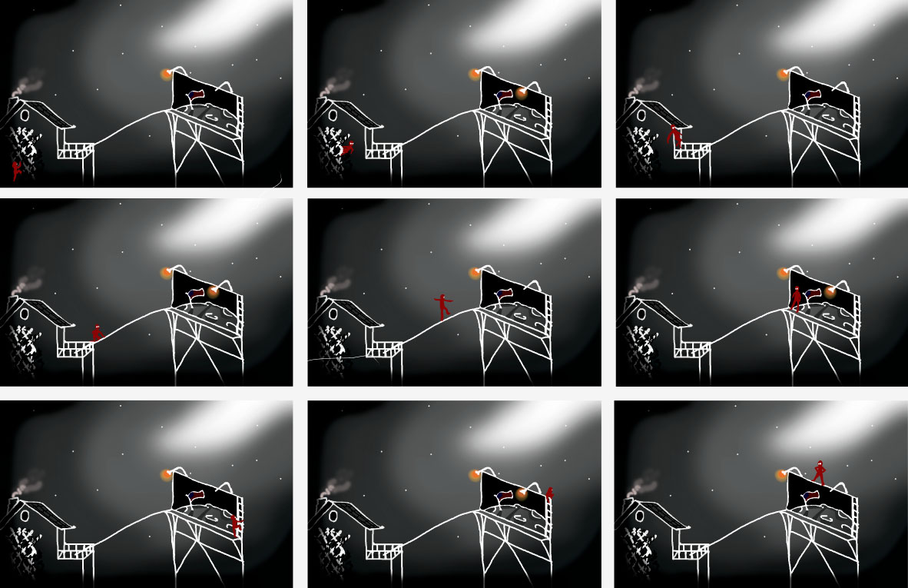
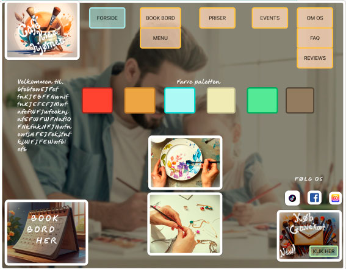
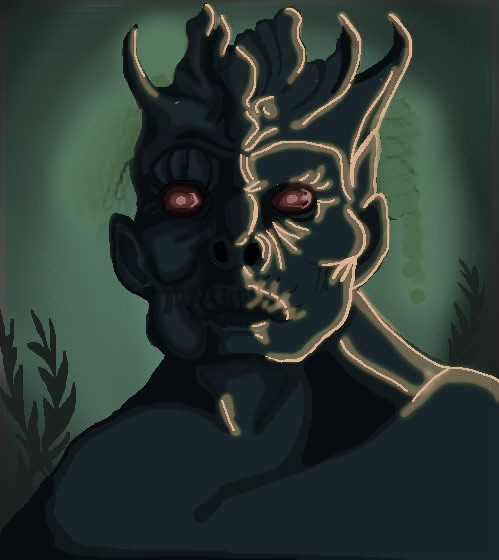

Moving-art with motion graphic
Throughout my education I have gained experience with a wide range of Adobe platforms, which allows a strengthening of my skills as a multimedia-designer.
This is shown in this short video which was created using Adobe Photoshop and After Effects.
This video is to demonstrate fundamental animation techniques applied to a classic painting.
These visual skills can be applied to produce motion graphics that emphasizes attention to detail, contrast and atmospheric storytelling.
Key aspects of a professional visual branding and interactiv media design for future video game projects.
Animation 2D with Premiere Pro
This short animation of a bell thats been made in Adobe Photoshop, After Effect and Premiere Pro shows the Tone Of Voice at Playdead studio. Even though this video is quite short, it contains many hours of editing in postproduction both in After Effect and Adobe Premiere Pro.
With focus on minimalism, an erie atmosphere and the audio, it contains Playdead´s values of making visual universes with dark undertones and many emplicit details which is reflected in my bell animation.
Merchendise with use of Lightroom Classic

Merchendise within the video game industry plays a segnificant key role in engaging with fans and enhancing the use/playse experience.
My skills extends to conceptually designing, staging and photographing merchandise to align with the aestetic and tone of the videgames from Playdead.
This specific image demonstrates my ability to produce visually and compelling merchandise using composition, lighting and shadow techniques to highlight the product.
With the use of Adobe Lightroom Classic can I create polished and professional photos that cater to a specific target audiende, ensuring the merchandise not only completes the games branding,
but also strengthen the overall experience.
Storyboard with Figma Design
The fundamental beginning of creating immersive storytelling, whether it's a basic video, game design, campaigns, cutscenes, visual contepts, TOV building, and so on
it's vital to structur an overall vision for future productions.
This image shows a way to create an immersive storyboard even as simple as it its structur may be, it plays a fundamental role in design.
I can produce storyboard that, through movement, color and style, effectivly showcases a deep and immersive narrative layout.
Moodboard with Figma Design
 Through my experience developing various UI and UX designs, I have become highly familiar with shaping overall atmosphere, Tone Of Voice and visual layouts in multimedia projects.
This image is one of many examples, showcasing my previous work in interactive media and visual storytelling.
A moodboard palys a central role in the development process, helping to research and define visual aestetics, narrative tone and structual hierarchy.
With my skillset, I can independantly and confidently produce a moodboard in alignment with a project's crative vision, support immersive branding, and communicate compelling visual narratives suitable for game design.
Photoshop with layers
One of my strong suits is my work ethics and my curiousity in regards to creating new and deeper images.
This image is created in Adobe Photoshpe by various layers from the bagground to highlights on the monsters body and face.
With my endless creativity, I can work in Adobe Photoshop with multible layers to create univeres that fits a specific theme, tone or atmosphere.
This set of skills can be used in verius forms in the creative part of a production whether it will be posters, frontpages, brainstorms and so on.